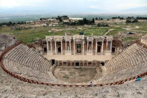
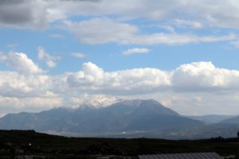
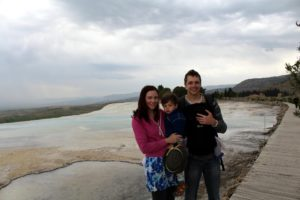
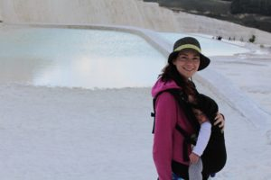
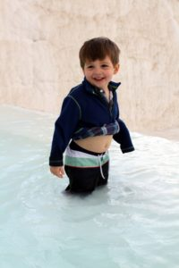
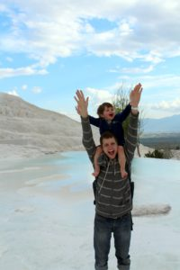

After we left Celcuk we headed on a train for Denizli. Once we arrived in Denizli we hopped on a bus (hour ride) for the small town of Pamukkale. It is mostly a resort town from which you can see the travertines of Pamukkale and the ancient Roman city which was built around this amazing wonder. Though there was not much to do in the city but travel to these sites they were breathtaking and worth the hassle of getting there.
{kind=link}
Since the town is so small getting around is mostly done on foot. The food options are sparse. My husband found a place for a Turkish Kebab one night that was okay and the next night as we were walking back from Pamukkale we stumbled upon this family owned restaurant. They were so kind to us and insisted we stay there and eat, also offering free soup and gifts for the kids. It was such a hospitable experience and the food was good, too, and cooked made to order. Wells still likes his Cailou doll.
The hotel we stayed at was one of the better ones in our Turkish visit. The bathroom still was not up to par with the American standard but what made the difference was the amazing breakfast. This family owned hotel put out quite the spread of food every morning and it was so amazing. We all filled up so much that we didn't need lunch. Our favorite was the dried figs! They were out of this world and we bought some at the market in Istanbul to take home.
Now on to the main reason for being there, Pamukkale of course! My husband did most of the planning for this trip so I was a bit surprised when we arrived and there was ancient Roman ruins of Hierapolis. The ruins are very well kept and restored. It is definitely worth exploring but you need to carve out a good chunk of time as the ruins are spread out from each other and require a bit of a hike and sometimes uphill. We did not bring our stroller so we were unable to explore as much as we like. We did see the theater which overlooking the mountains was awe inspiring. I understood why they built a city so high with views and thermal pools to use.
[caption id="attachment_601" align="aligncenter" width="300"] Theater at Hierapholis[/caption]
{kind=link}
[caption id="attachment_595" align="aligncenter" width="300"] View from Hierapholis[/caption]
{kind=link}
After we finished exploring the city we were exhausted! However, it was time to travel down the thermal pools to get back to town. Yes, that is the popular way to get down and it was a daunting feat with a baby strapped to you. I chose to have Isla strapped to me, rather than having to carry Wells down. It was scary at times but a once in a lifetime experience and we made it safely down the mountain, traveling from pool to pool. There is a kind of carved staircase where water runs through.
[caption id="attachment_600" align="aligncenter" width="300"] Family picture before heading down the travertines[/caption]
{kind=link}
[caption id="attachment_599" align="aligncenter" width="300"] Isla and I half way down the travertines[/caption]
{kind=link}
[caption id="attachment_598" align="aligncenter" width="200"] Wells enjoying the thermal pool[/caption]
{kind=link}
[caption id="attachment_597" align="aligncenter" width="200"] How Wells got down most of the travertines[/caption]
{kind=link}
This was another one of our favorite experiences. There are so many beautiful ancient sites to see in Turkey that I couldn't fit the day trip we took in this post but considering it was my husband's favorite site there will be more than enough to discuss. I hope you enjoy our pictures and experience. Feel free to ask any questions!